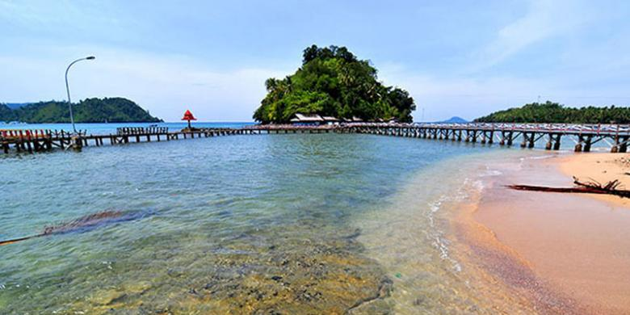
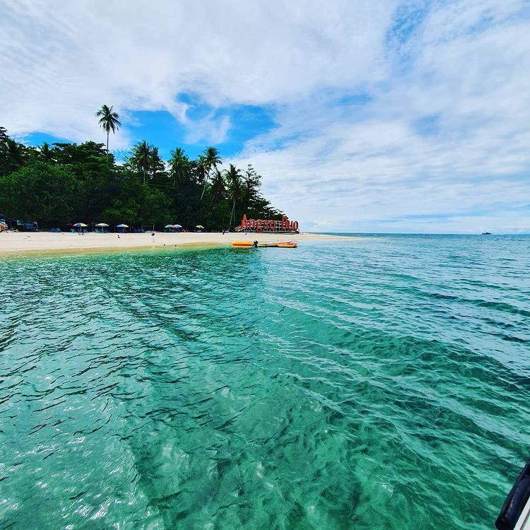
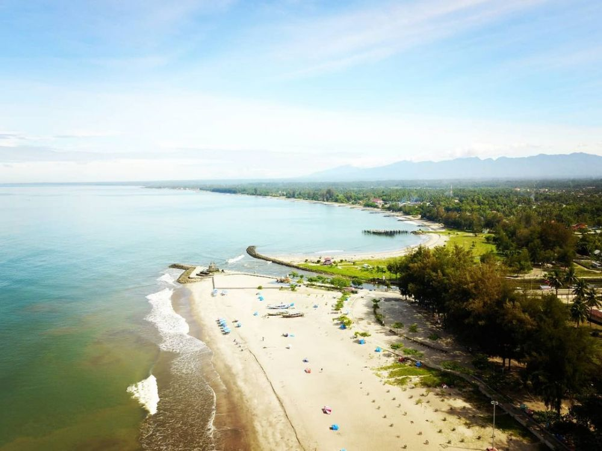
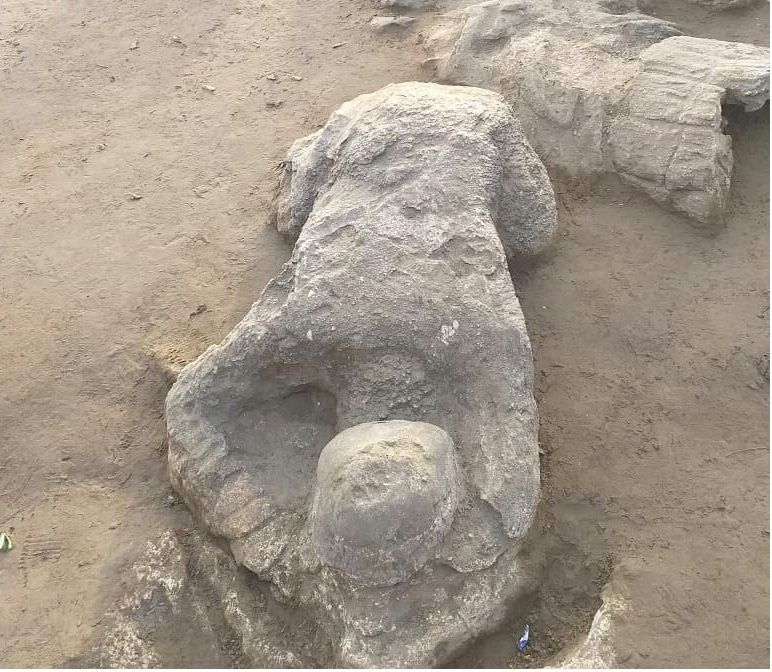
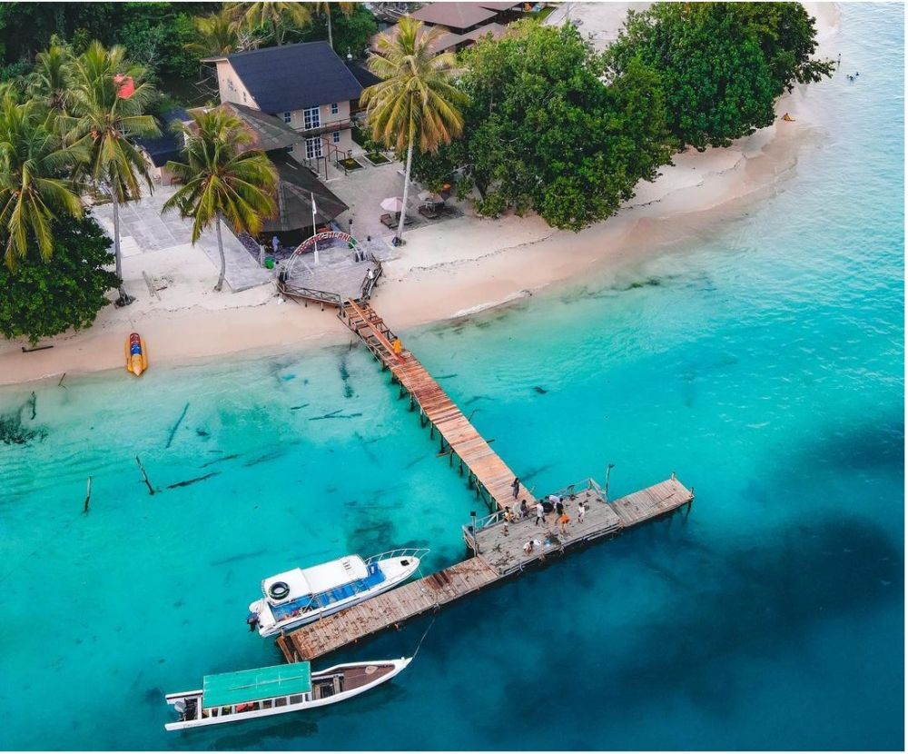

4 Rekomendasi Wisata Pantai di Sumatera Barat,
Wajib Mampir
Berbicara mengenai keindahan pantai-pantai di nusantara memang tidak akan ada habisnya.
Tentu hal ini dikarenakan Indonesia merupakan negara kepulauan yang diapit oleh laut dan
samudera. Hampir semua provinsi di Indonesia punya potensi wisata pantai, termasuk
Sumatera Barat.
Pantai Pulau Angso Duo

Pantai ini sebenarnya terletak di sebuah pulau bernama Angso Duo, sehingga perlu
naik kapal penyeberangan khusus untuk mengaksesnya. Adapun pantainya memiliki pesona
keindahan dan pasir putih yang mengelilinginya.
Pantai Gandoriah

Asal usul nama 'Gandoria' sendiri diambil dari cerita rakyat setempat. Pantai Gandoria
ini populer karena pemandangan yang indah serta lanskap baharinya. Spot selfie, banana boat,
wahana permainan anak, berenang, hingga selancar dapat dilakukan di pantai ini. Terdapat gugusan
pulau kecil tidak jauh dari pantai ini. Di antaranya adalah Pulau Angso Dua serta Pulau Kasiak.
Pantai Air Manis

Sebagaimana telah diketahui, Malin Kundang diceritakan dalam legenda dikutuk menjadi batu ketika
sedang sujud. Masyarakat lokal banyak yang meyakini bahwa batu Malin Kundang tersebut ada di pantai ini.
Pantai Pulau Pagang

Pantai Pulau Pagang sendiri terletak di Kabupaten Pesisir Selatan dan untuk mengaksesnya perlu dengan perahu.
Daya tarik pantai ini adalah memiliki pasir putih indah, panorama yang mempesona, air laut yang biru nan jernih,
hingga biota laut yang masih terawat.